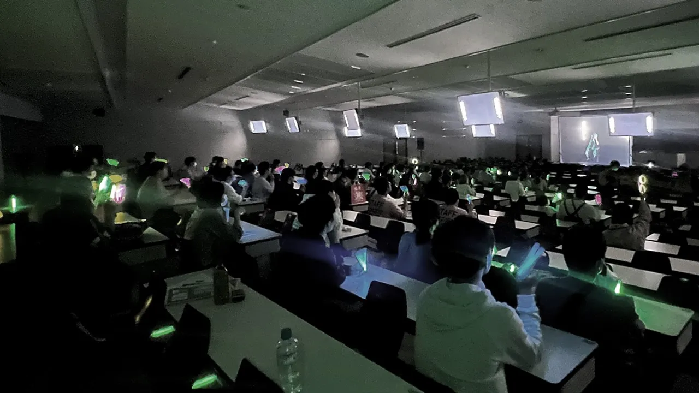

11/3(SUN)
大阪工業大学
枚方キャンパス
バーチャルライブ
VRライブ
企画展
1601教室
第1回：13:00
第2回：14:00
Clusterアプリ
第1回：14:15
第2回：16:15
バーチャルライブは、ポリッドスクリーンを活用し、現実の空間にバーチャルキャラクターを映し出すパフォーマンスの新しい形です。本ライブでは、観客の目の前に設置されたスクリーンに、ボーカロイドたちが映し出され、まるでその場にいるかのように歌い踊ります。
VRライブは、バーチャルリアリティ（VR）技術を活用して、現実世界では体験できない没入感と臨場感を提供するライブイベントです。参加者はVRヘッドセットやスマートフォンを使用して、3Dの仮想空間にアクセスし、まるでその場にいるかのようにパフォーマンスを楽しむことができます。本ライブではスマホアプリ「Cluster」を使用し、自身のアバターを使って仮想空間を移動しながら、自由にライブを楽しむことができます。
※注意事項を守っていただけない方を見かけた場合は、スタッフがお声がけ注意喚起をさせていただくことがございます。
京阪本線 樟葉駅
大2・大2A系統 ポエムノール北山行（大阪工大下車）4番乗り場
1・2系統 ポエムノール北山行（北山中央下車）4番乗り場
JR学研都市線・長屋駅
27系統 摂南大学枚方キャンパス行（北山中央下車）1番乗り場
29・37系統 摂南大学枚方キャンパス行（大阪工大下車）1番乗り場
直通 北山中央行北山中央・摂南大学枚方キャンパス行（北山中央下車）1番乗り場